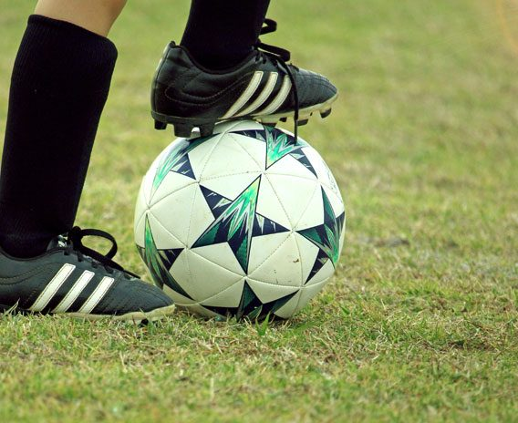

sports
It's not wheather you get knowked down! It's weather you get up
My favourite sport

Football
Football

Footabll is my favourite sports because it's really fun to play . My favourite thing about football is that you cannot use you hands we all need hands for doing most of the thing but in football it really different.I really like to watch football tournaments, I really enjoy to see players from different countries, How they plan etc. SO thst is why football is my favourite sports.